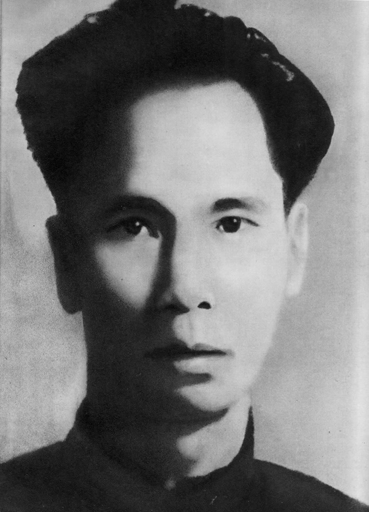
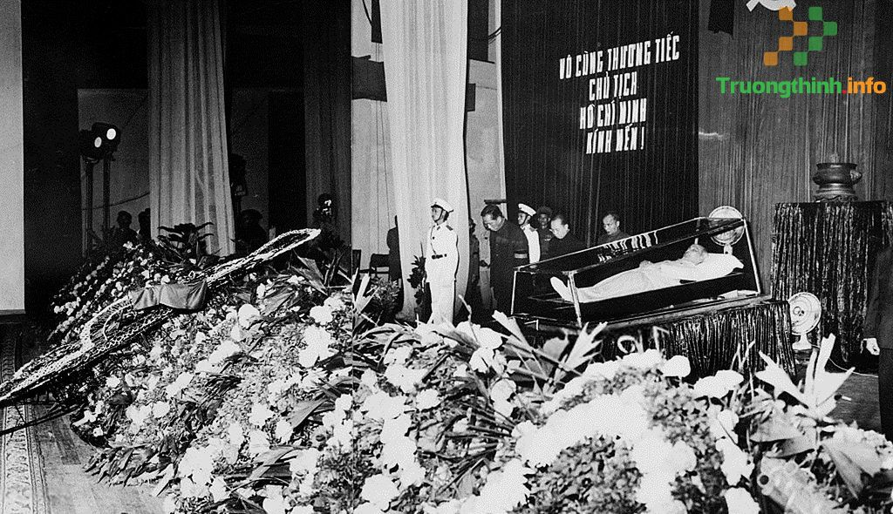

Tiểu sử Hồ Chí Minh
Nguyễn Sinh Cung (sau đổi là Nguyễn Tất Thành, rồi Nguyễn Ái Quốc) sinh ngày 19/5/1890 tại làng Sen, xã Kim Liên, huyện Nam Đàn, tỉnh Nghệ An.
Theo cha là cụ Nguyễn Sinh Sắc đi nhiều nơi, tiếp xúc với môi trường học tập và tư tưởng Nho giáo.
Năm 1901, Người vào học tại trường Quốc học Huế, nơi tiếp xúc với tư tưởng yêu nước và các phong trào chống Pháp.


Năm 1911, Người ra đi tìm đường cứu nước, đặt chân đến nhiều nước trên thế giới để tìm con đường giải phóng dân tộc.
.jpg)
Biên tập báo Le Paria (Người cùng khổ), viết nhiều bài tố cáo thực dân Pháp.
Tham dự Đại hội V Quốc tế Cộng sản ở Moscow, phát biểu về phong trào cách mạng ở thuộc địa.

Năm 1930, Người sáng lập Đảng Cộng sản Việt Nam, mở ra bước ngoặt vĩ đại cho cách mạng nước ta.
Thành lập Mặt trận Việt Minh tại Pác Bó (Cao Bằng).
Ngày 2/9/1945, tại Quảng trường Ba Đình, Chủ tịch Hồ Chí Minh đọc Tuyên ngôn Độc lập, khai sinh nước Việt Nam Dân chủ Cộng hòa.
Chiến thắng Điện Biên Phủ. Hiệp định Genève được ký kết, đất nước tạm chia hai miền.
Thành lập Mặt trận Dân tộc Giải phóng miền Nam Việt Nam.

Mỹ đổ quân trực tiếp vào miền Nam.
Tổng tiến công và nổi dậy Tết Mậu Thân gây tiếng vang lớn.
Chủ tịch Hồ Chí Minh qua đời ngày 2/9/1969 tại Hà Nội, để lại tư tưởng Hồ Chí Minh – di sản tinh thần vô giá cho dân tộc.
